Next: Two-stream instability Up: Self-consistent-field simulation of linear Previous: Comparison with linear theory
In the above, we see that the integration
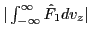 decreases with time, which seems to be inconsistent with
the conservation of particle number. Note the spatial dependence of the
perturbed distribution function is 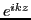, i.e., the perturbed
distribution function is given by
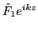, the real part of
which corresponds to the physical distribution function, i.e.,
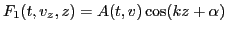, where
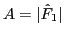 and 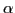 is
the angle of  on the complex plane. The particle number for the
distribution function
on the complex plane. The particle number for the
distribution function  in a region of the wave length 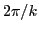 is
given by
in a region of the wave length 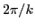 is
given by
| 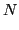 | 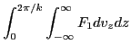 | ||
| 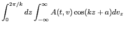 | |||
| 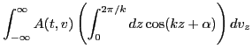 | (90) |
yj 2016-01-26